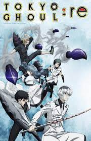

tokyo ghoul(season1)

Tokyo Ghoul is the first season of an anime television series adapted from the manga of the same name by Sui Ishida. The series is produced by Pierrot, and is directed by Shuhei Morita. The series aired from July 4, 2014 to September 19, 2014 on Tokyo MX, TVO, TVA, TVQ, BS Dlife and AT-X.[1] This season adapts the first sixty-six chapters of the manga series
tokyo ghoul(season1 part2 )
Ken Kaneki has finally come to accept the monstrous, flesh-craving part of himself that he has feared and despised for so long. After escaping captivity and torture, Kaneki joins Aogiri Tree—the very militant ghoul organization that had abducted him, leading his friends to question his true motive and loyalty.
As tension between the government and the ghouls continues to rise, the Commission of Counter Ghoul, the government's specialized anti-ghoul agency, has intensified their efforts to completely purge Tokyo of ghouls. This threatens the transient peace of Kaneki's friends and former comrades—the ghouls at the Anteiku coffee shop. Aware of the dangerous situation, Kaneki faces several battles that puts his precious fleeting humanity on the line.
tokyo ghoul re:(season2)

Tokyo Ghoul:re is the first season of the anime series adapted from the sequel manga of the same name by Sui Ishida, and is the third season overall within the Tokyo Ghoul anime series. The series is produced by Pierrot, and is directed by Odahiro Watanabe. The anime series aired from April 3, 2018 to June 19, 2018 on Tokyo MX, Sun TV, TVA, TVQ and BS11.[1] This season adapts the first fifty-eight chapters of the manga
tokyo ghoul re:(seasons2 part2)
After the conclusion of the Tsukiyama Family Extermination Operation, the members of the Commission of Counter Ghouls (CCG) have grown exponentially in power and continue to pursue their goal of exterminating every ghoul in Japan. Having resigned from Quinx Squad, the now seemingly emotionless Haise Sasaki begins taking on more and more tasks from the CCG with no regard to the difficulty. Despite his vacant expressions, Ken Kaneki's memories are resurfacing in Haise, leaving him in a state of internal conflict. Meanwhile, his new coldhearted behavior is affecting the people around him. Quinx Squad are left in shambles, having to cope with the death of one of their members without the support of their former mentor.